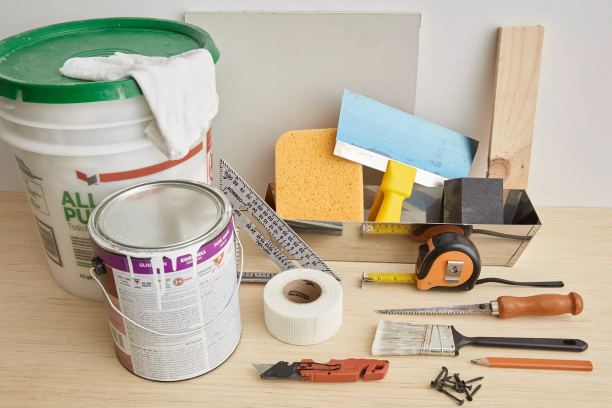

Whether you're a home owner, a renter, have kids, or no kids things happen! More specifically it is not uncommon for people to have situations where scrtaches, screw holes, scrapes, damages and sometimes even huge holes end up on your walls. No matter the situation having the basic skill of being able to patch that up on your own can be very beneficial.

1.Cut piece: Measure past the large hole at least two inches each way. Take that measurement and transfer it to the drywall piece
using the pencil and straight edge. Score along the lines using the utility knife. Bend along the score to separte your drywall piece.
2. Prepare hole: Take the drywall piece, place over large hole and outline. Once outlined use the utitly knife to score and the
serated drywall knife to cut along the line. Once cut remove the remaining drywall.
3. Attatch backer: I
4. Attach new drywall:
5. Mesh tape:
6. Mud Sand Repeat: